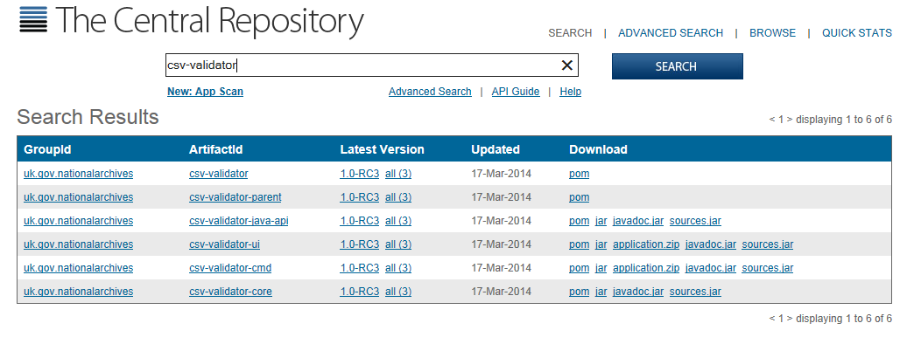
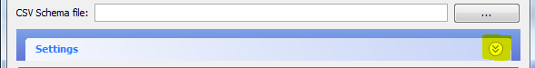
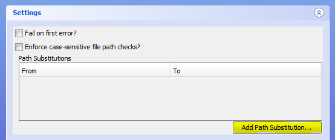
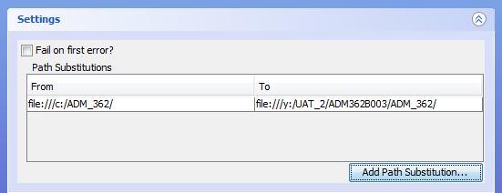
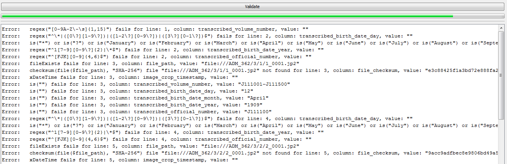

CSV Validator
CSV Validator is a CSV validation and reporting tool which implements CSV Schema. Released as Open Source under the Mozilla Public Licence version 2.0.
Overview
The CSV Validator twill take a CSV Schema file and a CSV file, verify that the CSV Schema itself is syntactically correct and then assert that each rule in the CSV Schema holds true for the CSV file. The Validator is predominantly written in Scala 2.11 and run's on any platform with a Java Virtual Machine (JVM). The Validator toolset provides:
- A stand-alone command line tool.
- A desktop application (we provide a simple Swing GUI).
- A library that can be embedded into your own Scala project.
- A library that can be embedded into your own Java project, as we also provide native Java 6 interfaces.
Background
The National Archives receive Metadata along with Collections of Digitised or Born-Digital Collections. Whilst The National Archives typically process Metadata in XML and RDF, it was recognised that it was too difficult and/or expensive for many suppliers to produce the desired metadata in XML and/or RDF, as such it was decided that Metadata would be received in CSV format.
Our experience shows that when suppliers are asked to produce metadata in XML or RDF there are several possible barriers:
- Many content/document repository systems only export metadata in CSV, or generate XML or RDF in a non-desirable format which would then have to be transformed (at further cost).
- Lack of technical knowledge in either XML or RDF.
- Lack of experience of tools for producing and validating XML or RDF.
- Cost. Installing new software tools comes at a severe cost for those OGDs that have outsourced their IT support.
- Best/Worst case, most suppliers already have Microsoft Excel (or an equivalent) installed which they know how to use to produce a CSV file.
The National Archives set exacting requirements on the Metadata that they expect and the format of that Metadata. Such constraints enable them to automatically process it, as the semantics of the metadata are already defined. Whilst previous bespoke tools have been developed in the past for validating data in various CSV files, it was felt that a generic open tool which could be shared with suppliers would offer several benefits:
- A common CSV Schema language, would enable The National Archives to absolutely define required Metadata formats.
- Developed CSV Schemas could be shared with suppliers and other archival sector organisations.
- Suppliers could validate Metadata before sending it to The National Archives. Hopefully reducing mistakes and therefore costs to both parties.
- The National Archives could use the same tool to ensure Metadata compliance automatically.
- As a secondary concern, it was recognised that this tool would also have value for anyone working with CSV as a data/metadata transfer medium.
Installing the CSV Validator
The core of the CSV Validator is written in Scala 2.11, Scala runs in the Java Virtual Machine, so requires Java 6 or newer to be installed on your computer in order to run. The latest release build is automatically published from the source code repository on GitHub, to Maven Central currently (12 March 2014), Version 1.0, Release Candidate 3 (1.0-RC3).
To install, download the appropriate application.zip file for either csv-validator-ui (for the GUI Application) or csv-validator-cmd (for the Command Line Application). Simply extract the entire contents of the zip to your desired installation location. The validation components are identical, but csv-validator-ui contains additional components to create the GUI interface. The other difference between the packages is in the .bat and shell scripts supplied. For csv-validator-ui they launch the GUI, for csv-validator-cmd they accept command line parameters to allow the CSV file and CSV schema to be selected (and other options to be used).
CSV Validator GUI Application
Starting the GUI
In order to run the CSV Validator via the GUI, navigate to the directory where you installed csv-validator, and then to the bin subdirectory and run either:
- validate-gui.bat on Windows operating systems, or;
- validate-gui shell script on Unix/Linux.
Selecting metadata and schema for validation
To validate data you must supply a full filepath for the csv file to be validated, and for the schema it is to be validated against. You can either type, or copy-and-paste, the filepath into the appropriate box, these are labelled "CSV file" and "CSV Schema file" respectively. Alternatively, click the buttons labelled "..." (highlighted in the image below):

This will open up a standard "File open" dialogue, allowing you to navigate to the file in the file system, and select it:

Clicking "Open" will populate the related text box:

Using Settings
While in the most straightforward cases, you can validate a CSV file immediately after supplying the filepaths, in many instances you will need to supply Settings options. Using the Settings is equivalent providing options when running via the Command Line. To open up Settings, click on the downward facing double arrow below the file dialogue buttons (highlighted below):
Having opened up Settings, you will see that there are three sets of options:
Fail on first error?;Enforce case-sensitive filepath checks?, and;Path Substitutions
Fail on first error
With this setting selected, validation will terminate when the first
Validation Error is encountered in the CSV file.
If there are no validation errors the whole CSV file will be validated and return PASS.
You should be aware that the CSV Schema can declare that some validation tests will produce only validation warnings, rather than validation errors.
A validation warning will not stop validation, even with "Fail on first error" set.
This setting is equivalent to using the -f true or --failfast true options when running via the Command Line.
Enforce case-sensitive filepath checks
With this setting selected, validation treats filepaths as being case sensitive, even if the file system itself is not (e.g. on Windows NTFS). Without doing this data which appears to validate on a Windows machine may then fail when further processing is carried out on a system where the file system is case sensitive (e.g. Unix/Linux). This setting is equivalent to using the -c true or --case-sensitive-paths true options when running via the Command Line.
Path Substitutions
Path Substitutions are a more slippery concept to grasp. As described in the Background section above, the original use case at The National Archives was for a tool to validate metadata files. These files generally describe a set of digital files being transferred to The National Archives and so contain information, including a filepath and checksum, about each file in a particular transfer. In addition to checking that the metadata files are correctly structured, we wish to check that the file actually exists at the filepath specified, and that when recalculated, the checksum for the files matches the value supplied in the CSV file. To this end, the CSV Schema language contains a set of so-called External Single Expressions, which allow reference to other file system resources outside the CSV file being validated. However, it is likely that after transfer the drive letter or mount point (at least) will have changed from the original. Path Substitutions allow us to overcome this at validation time by effectively performing a simple find-and-replace within the file during validation which maps the supplied filepath to the equivalent on the system where validation is actually taking place. It is also important to note that the CSV Validator expects filepaths to be supplied as file URIs (so on Windows systems, you may need to reverse the slashes).
Creating Path Substitutions
To create a Path Substitution in the GUI, click the "Add Path Substitution..." button (highlighted):
This will open a popup:

in the first box enter the text string which will be found in the supplied CSV file, and in the second the text string which should be substituted. So considering the examples already used in this document, the CSV file is found at Y:\UAT_2\ADM362B003\tech_acq_metadata_v1_ADM362B003.csv and we can see that there is a folder named ADM_362 alongside the CSV file, that folder contains the images which the CSV file describes. When created, the metadata CSV file and images were on the C: drive, instead of the Y: drive, and they are also now in a project-related folder structure. So the filepaths in the metadata CSV file all begin file:///c:/ADM_362/ - when we run the validator, we actually need to look for the content files at file:///y:/UAT_2/ADM362B003/ADM_362/ when we are checking for their existence and verifying the associated checksums. So we enter those filepath fragments into the "From:" and "To:" boxes respectively, and click OK. This gives:
Creating a Path Substitution in this way is equivalent to running via the Command Line with the -p or --path flags and supplying a key:value pair.
Editing Path Substitutions
To edit a substitution, simply double-click on the field you wish to edit:

Hit <Enter> or <Tab>, or click on the other side of the substitution, to complete the edit.
Validating a CSV file and understanding program output
Having selected a CSV file and schema, and chosen which settings (if any) to apply, validation is performed by clicking the large "Validate" button. As of Version 1.0-RC2, there is a progress bar (but due to a threading issue) that and output to the report pane (below the "Validate" button) is currently only updated when all rows have been validated (Issue #34 has been raised to address this). If checksum verification is being performed, the validation can take a considerable amount of time, as each file described in the CSV file has to be read in full in order to calculate the checksum. The mouse pointer will change to the egg-timer (or equivalent) while validation is taking place. You should also note that information already in the output pane is currently not cleared when a new validation run is started (it is only overwritten on completion).
If the data is completely clean, and validates perfectly against the schema, the only output returned to the output pane will be PASS.
Schema Errors
If you are developing schemas, it is possible to make syntax errors in the schema, for example a mismatch in the declared number of columns
(using the Total Columns Directive) against the actual number of
Column Definitions included in the schema (eg
@totalColumns = 41 but number of columns defined = 42 at line: 2, column: 1).
The schema itself is always checked before validation of the data begins, and schema errors always terminate validation.
Or, if the Version Declaration has been omitted from the schema, or is incorrect,
you will see a schema error saying that the Version Declaration is not present
(eg [1.1] failure: version 1.0 missing or incorrect). You will also see this if you accidentally switch over the input filepaths in the validator,
and put the filepath for the CSV data file into the field for the schema and vice versa:
![[1.1] failure: version 1.0 missing or incorrect
<br />
batch_code,department,series,piece,item,ordinal,file_uuid,file_path,file_checksum,resource_uri,scan_operator,scan_id,scan_location,scan_native_format,scan_timestamp,image_resolution,image_width,image_height,image_tonal_resolution,image_format,image_colour_space,process_location,jp2_creation_timestamp,uuid_timestamp,embed_timestamp,image_split,image_split_other_uuid,image_split_operator,image_split_timestamp,image_crop,image_crop_operator,image_crop_timestamp,image_deskew,image_deskew_operator,image_deskew_timestamp,QA-code,comments,transcribed_volume_number,transcribed_birth_date_day,transcribed_birth_date_month,transcribed_birth_date_year,transcribed_official_number
<br />
^](images/version-declaration-error.png)
Validation Errors
When Validation Errors occur they will be reported in the output pane on the completion of validation.
The report will be prefixed Error: and will then show the Validation Rule where the error has occurred,
the line and data column from the CSV file where the error has occurred, the actual data present in the file, and for rules such as checksum validation,
what the computed value of the data was.
The line number refers to data lines only, so if the CSV file contains a header row, you may see an apparent discrepancy in the line numbers displayed when you view
the data in a text editor or spreadsheet program, compared to the line number indicated by the csv-validator.

The next image shows a more varied selection of Validation Errors, and demonstrates that the basic format of the error messages is consistent:
Saving output as report
If you wish to save the validation output as a report, for example, in order to send it to whoever supplied the data so that they can correct it, simply click the "Save" button towards the bottom right of the CSV Validator window. If you have opened the settings pane, you may need to close it again, or move your mouse to the bottom of the window and drag downwards to expand it, in order to be able to see this button. This will open a standard save dialogue box. Save the output as a simple text file at your desired location.
Closing the Validator
All standard means of closing the window should work, or click the close button at the bottom right of the validator window. If you have opened the settings pane, you may need to close it again, or move your mouse to the bottom of the window and drag downwards to expand it, in order to be able to see this button.
CSV Validator Command Line Tool
Starting the CSV Validator at the command line
In order to run the CSV Validator via the command line, set your working directory to the bin subdirectory of the installation directory and execute either:
- validate.bat on Windows operating systems, or;
- validate shell script on Unix/Linux.
Usage: validate [options] <csv-path> <csv-schema-path> options: -f <value> | --fail-fast <value> Stops on the first validation error rather than reporting all errors if used with value true -p:<key>=<value> | --path:<key>=<value> Allows you to substitute a file path (or part of) in the CSV for a different file path -c <value> | --case-sensitive-paths <value> Enforces case-sensitive file path checking if used with value true. Useful when validating on case-insensitive filesystems like Windows NTFS <csv-path> The path to the CSV file to validate <csv-schema-path> The path to the CSV Schema file to use for validation --help Prints this usage text
Using command line parameters
As a minimum you must supply two command line parameters in order to validate a CSV file. The first parameter is the path to the CSV file you wish to validate, the second the path to the schema. If a the path contains spaces, wrap it in double quotes (").
Using command line options
Three options (plus --help, which merely reproduces the usage text given above) are available to modify certain behaviours of the CSV Validator.
Fail fast
To use the fail fast option, supply either of the flags -f or --fail-fast along with a (boolean) value.
Using either true or 1 as the supplied value switches the option on. With this option in force,
validation will be terminated when the first Validation Error is encountered.
By default (or if you supply false or 0 with this option flag) validation continues to the end of the CSV file
being validated, and all validation errors are reported.
However, Schema Errors always cause immediate termination of validation, regardless of the use of this option.
Path substitutions
To use the path substitution option, supply either of the flags -p or --path along with a key=value pair.
The reasons for using path substitutions are discussed in more detail in Path Substitutions section under the use of GUI.
The key represents the string to be found in the CSV file being validated, the value the string to replace that with.
Case sensitive paths
To use the case sensitive paths option, supply either of the flags -c or --case-sensitive-paths along with a (boolean) value.
Using either true or 1 as the supplied value switches the option on. With this option in force,
file paths used with Column Validation Expressions such as
File Exists Expressions will be treated as being case sensitive even on operating systems where
that would not normally be the case, such as Windows NTFS.
By default (or if you supply false or 0 with this option flag) the behaviour of the host operating system will be used.
This helps to avoid inconsistent validation results when validating the same CSV file and schema on different operating systems.
Command line output
All output is written to stdout by default, and so can be written to file by the usual means. Reporting is otherwise identical to that produced by the GUI client, which is described in the section Validating a CSV file and understanding program output above.
Example CSV Schemas
In order to understand how to use the Validator in practice, see the example CSV Schema file, digitised_surrogate_tech_acq_metadata_v1_TESTBATCH000.csvs, in the GitHub repository digital-preservation/csv-schema. In the example-data subfolder you will find a CSV file, digitised_surrogate_tech_acq_metadata_v1_TESTBATCH000.csv, which complies with the schema. This CSV file refers to XML files in the folder structure below TEST_1
If you download the csv-schema repository and run the csv-validator (by either of the methods described above), you will find that initially it reports validation errors
as it cannot find the XML files for the fileExists or checksum column validation tests. If you create a path substitution, replacing file:///TEST_1/ with
file:///<your system path>/TEST_1/ (if you simply placed the repository on your C:\ drive, <your system path> will look something like,
c:\csv-schema\example-schemas\example-data, but as it's a URL, you should reverse the slashes, c:/csv-schema/example-schemas/example-data - in addition if there are any spaces in the path,
you must escape them by replacing them with %20) you should then find that all tests pass. There is an additional complication that the % character is treated as a
special character in Windows scripts, and itself needs to be escaped, so you should actually use %%20 to obtain the desired behaviour (there can be a further complication
if you are calling out from a controlling script to launch the validator ie call validate.bat where the outer script will do a first replacement of the escaped
character, and so within the call statement you would actually need to use %%%%20 to obtain the desired behaviour (this is passed to the call statement itself as %%20).